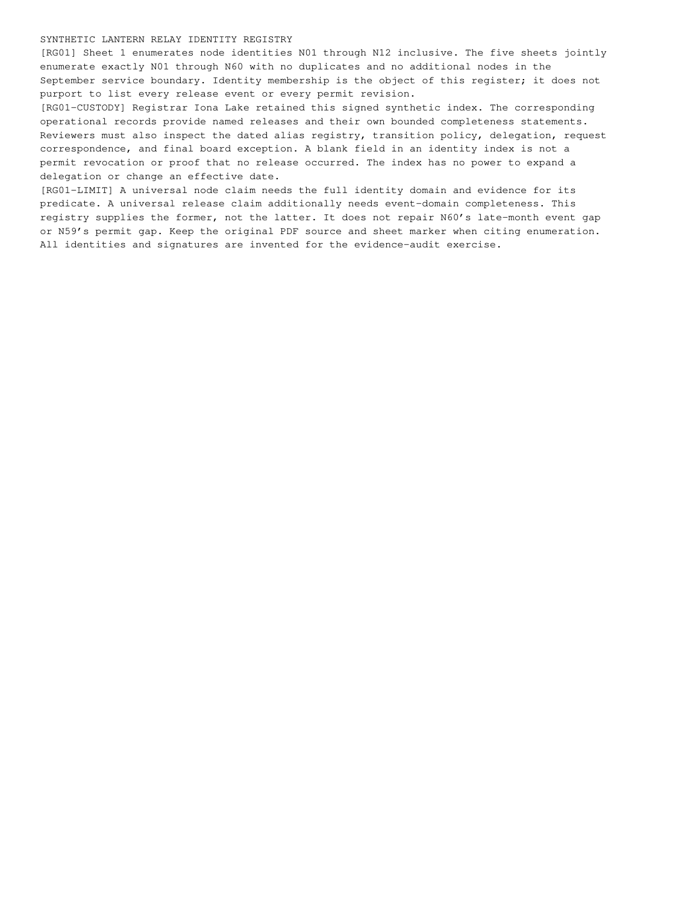

registry-page-1.png
Published path: runs/10-distributed-assurance-mixed/visual-review/registry-page-1.png
Open / download original bytes

validation/runs/10-distributed-assurance-mixed/visual-review/registry-page-1.png · 122,002 bytes · SHA-256 bbae3423260364d6a987bf84f24e3dc9098f7f2aef7f5f55bfeb6e533a2f6424
